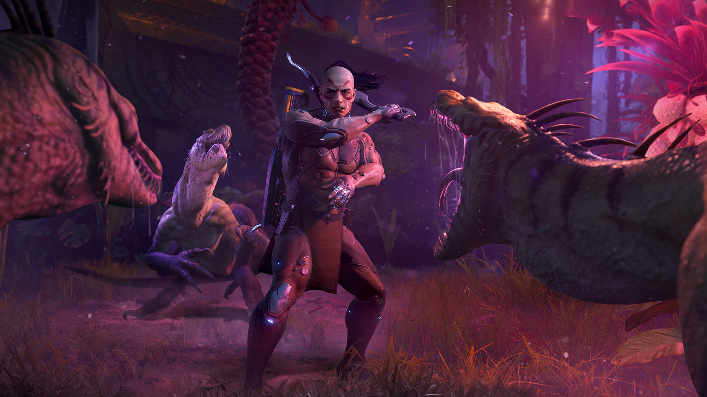
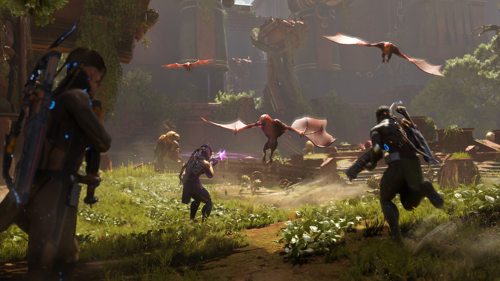
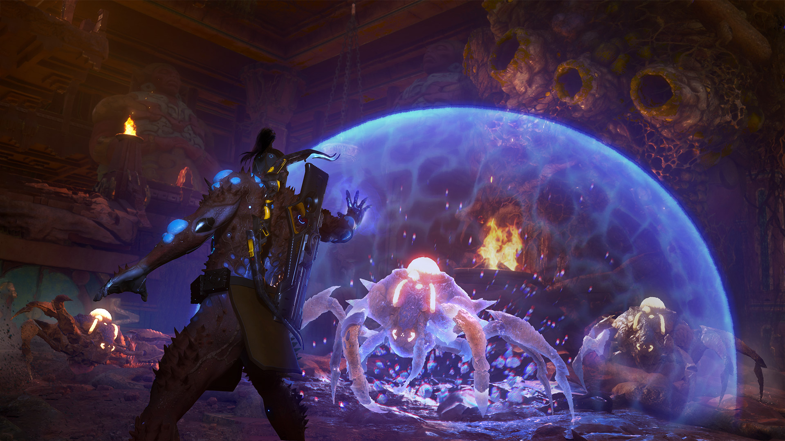
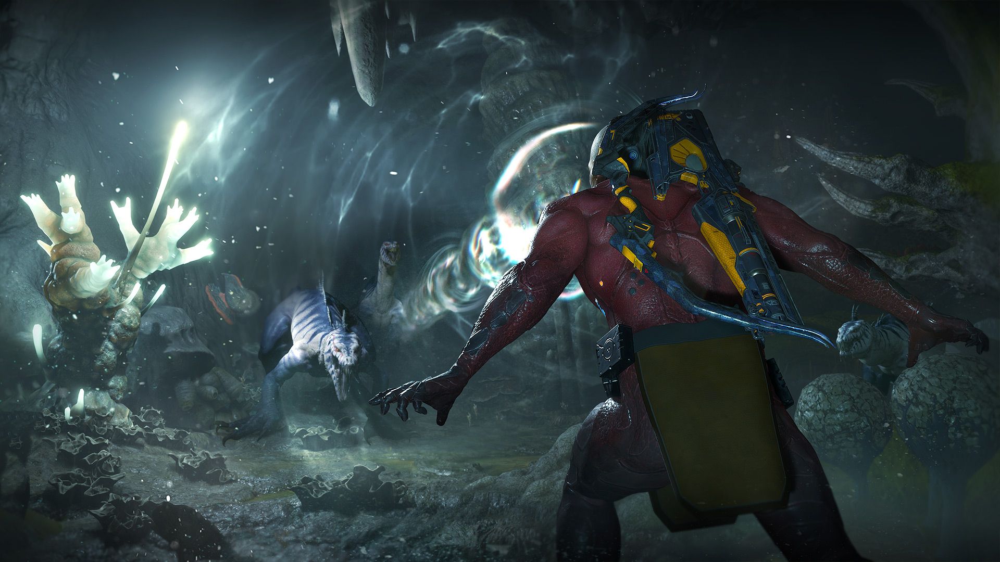

Turok: Origins
At Saber Interactive, I’m working on the recently announced game Turok: Origin. In this project, I contribute to the design of various UI screens and elements, ensuring their implementation prioritizes performance, adaptability to change requests, and reusability.
As part of my initiative at work, I review the codebase to identify needs or issues and address them with an emphasis on flexibility and modularity, ensuring they can be reused across multiple projects. By establishing standards and improving code quality, I contribute to increased implementation speed and overall efficiency.



